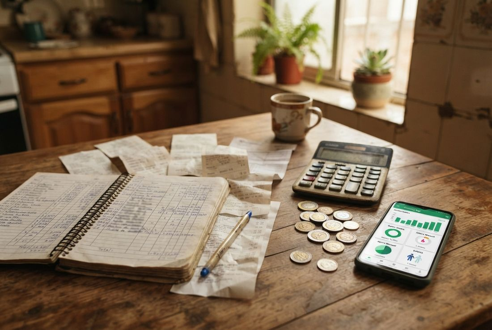

Por qué creamos Dolarito
En muchas casas los gastos se anotan en un cuaderno, en el chat de la familia o simplemente no se anotan. A fin de mes nadie sabe bien a dónde fue el dinero.
Dolarito nace para resolver eso: una app sencilla donde cada integrante registra sus gastos en segundos, y la familia ve en un solo lugar cuánto entra, cuánto sale y cuánto se puede ahorrar.
Como en Ecuador la moneda es el dólar, el nombre salió solo: Dolarito, el que cuida cada dólar de la casa.